Textual Analysis
Matthias Uckert
30 May, 2022
Description
In this session will we use the SEC EDGAR 10-K text files and the annual reports from www.AnnualReport.com we downloaded in on day 1 in session 1 and session 2. The purpose of this session is to show the procedure how to extract information from unstructured text.
Throughout this script we will use custom functions to download and transform data. All the script specific functions are stored in this folder: 1_code/00_functions/f-f-textual_analysis.R (As a reference I also put the important functions in the script)
Script Setup
library(tidyverse); library(tidytext); library(readtext); library(furrr)
library(fst); library(stringi); library(ISOcodes); library(scales); library(topicmodels)
source("1_code/functions/f-all.R")
source("1_code/functions/f-textual_analysis.R")
.workers <- min(availableCores() / 2, 16)Code
Paths & Files
lst_paths <- list(
dir_main = "2_output/05_textual_analysis",
dir_pdf = "2_output/00_get_arcom_data/documents/",
dir_sec = "2_output/00_get_edgar_data/documents/",
path_pdf_data = "2_output/00_get_arcom_data/arcom_firm_data.rds",
path_sec_data = "2_output/00_get_edgar_data/txt_download.rds",
dir_token = "2_output/05_textual_analysis/token",
path_stop = "2_output/05_textual_analysis/lm_stop.rds",
path_1gram = "2_output/05_textual_analysis/1gram.rds",
path_2gram = "2_output/05_textual_analysis/2gram.rds",
path_frq_1gram = "2_output/05_textual_analysis/frq_1gram.rds",
path_frq_2gram = "2_output/05_textual_analysis/frq_2gram.rds",
path_com_1gram = "2_output/05_textual_analysis/com_1gram.rds",
path_com_2gram = "2_output/05_textual_analysis/com_2gram.rds",
path_lda = "2_output/05_textual_analysis/lda.rds",
path_not_2gram = "2_output/05_textual_analysis/not_2gram.rds",
dir_cache = "2_output/04_xbrl_analyze/cache/cache_"
) %>% create_dirs()First we read in all the raw files stored in the session specific folders for EDGAR and www.AnnualReport.com
tab_files_pdf <- list_files_tab(lst_paths$dir_pdf, reg = "pdf$")
tab_files_sec <- list_files_tab(lst_paths$dir_sec, reg = "zip$") %>%
filter(startsWith(doc_id, "txt"))Read Tables
Additionally, we read in company information to conduct analyses between Europe aand the United States. We do so by recoding all non-US countries to ‘Europe’
tab_pdf_data <- read_rds(lst_paths$path_pdf_data) %>%
select(-isin)
tab_sec_data <- read_rds(lst_paths$path_sec_data) %>%
mutate(doc_id = paste0(file_ext, "_", symbol, "-", year)) %>%
select(doc_id, year, company = company_name) %>%
mutate(country_code = "USA") %>%
left_join(select(ISO_3166_1, country_code = Alpha_3, country = Name), by = "country_code")
tab_data <- bind_rows(tab_pdf_data, tab_sec_data) %>%
mutate(country = if_else(!country == "United States", "Europe", country))
rm(tab_pdf_data, tab_sec_data)Select Files
To limit the dataset we read into memory, we restrict our analysis to the time frame between 2006-2015 (10 years) and only use companies for which we have a balanced panel
tab_files <- bind_rows(tab_files_pdf, tab_files_sec) %>%
left_join(select(tab_data, doc_id, country, year, company), by = "doc_id") %>%
filter(!is.na(country)) %>%
filter(between(year, 2006, 2015)) %>%
group_by(company) %>%
filter(all(2006:2015 %in% year))The resulting sample looks the follows:
| country | n_firm | n_doc |
|---|---|---|
| Europe | 140 | 1400 |
| United States | 59 | 590 |
To have equal amount of United States and European files we sample our set to 25 companies per jurisdiction. In total we will have 50 comapanies over 10 years which amounts to 500 files that we analyze
set.seed(123)
tmp <- distinct(tab_files, country, company) %>%
group_by(country) %>%
slice_sample(n = 25) %>%
ungroup()
tab_files <- inner_join(tab_files, tmp, by = c("country", "company"))The resulting sample looks the follows:
tab_files %>%
group_by(country) %>%
summarise(n_firm = n_distinct(company), n_doc = n(), .groups = "drop") %>%
show_table()| country | n_firm | n_doc |
|---|---|---|
| Europe | 25 | 250 |
| United States | 25 | 250 |
tab_files_pdf <- filter(tab_files, country == "Europe")
tab_files_sec <- filter(tab_files, country == "United States")Process European Files
.prc <- list_files_tab(lst_paths$dir_token)
tab_files_pdf_use <- filter(tab_files_pdf, !doc_id %in% .prc$doc_id)
if (nrow(tab_files_pdf_use) > 0) {
plan("multisession", workers = .workers)
future_walk(
.x = tab_files_pdf_use$path,
.f = ~ pdf_read_and_tokenize(.x, lst_paths$dir_token),
.options = furrr_options(seed = TRUE)
)
plan("default")
}
rm(tab_files_pdf_use)Process United States Files
We use a custom function: sec_read_and_tokenize() to
extract the test from the sec files (click on arrow to
show).
sec_read_and_tokenize <- function(.path, .dir = NULL) {
tab_ <- try(readtext::readtext(.path))
if (inherits(tab_, "try-error")) {
return(NULL)
} else {
text_ <- stringi::stri_replace_all_regex(tab_$text, "([[:blank:]]|[[:space:]])+", " ")
text_ <- unlist(stri_extract_all_regex(text_, "<DOCUMENT>.+?</DOCUMENT>"))
text_ <- text_[grepl("<TYPE>10-K|<TYPE>EX-", text_)]
text_ <- paste(text_, collapse = " ")
tab_ <- tab_ %>%
dplyr::select(-doc_id) %>%
dplyr::mutate(text = remove_html_tags(text_)) %>%
tidytext::unnest_tokens(word, text) %>%
dplyr::filter(!grepl("\\d", word)) %>%
dplyr::filter(nchar(word) > 3)
}
if (!is.null(.dir)) {
fst::write_fst(tab_, file.path(.dir, gsub("\\.zip$", ".fst", basename(.path))))
return(NULL)
} else {
return(tab_)
}
}
remove_html_tags <- function(.string, rm_linebreaks = TRUE) {
string_ <- .string
if (rm_linebreaks) {
string_ <- stringi::stri_replace_all_regex(string_, "([[:blank:]]|[[:space:]])+", " ")
}
string_ <- string_ %>%
stringi::stri_replace_all_regex(., "(?i)<script.*?>.*?</script.*?>", "") %>%
stringi::stri_replace_all_regex(., "(?i)<xbrl.*?>.*?</xbrl.*?>", "") %>%
stringi::stri_replace_all_regex(., "(?i)<xml.*?>.*?</xml.*?>", "") %>%
stringi::stri_replace_all_regex(., "(?i)<link:.*?/>", "") %>%
stringi::stri_replace_all_regex(., "(?i)<table.*?>.*?</table.*?>", "") %>%
# stringi::stri_replace_all_regex(., "(?i)<ix.*?>.*?</ix.*?>", "") %>%
stringi::stri_replace_all_regex(., "(?i)<.*?>|&#.+?;|<.*?>", "") %>%
stringi::stri_replace_all_regex(., "(?i) ", " ") %>%
stringi::stri_replace_all_regex(., "(?i)&", "&")
if (rm_linebreaks) {
string_ <- stringi::stri_replace_all_regex(string_, "([[:blank:]]|[[:space:]])+", " ")
}
return(trimws(string_))
}.prc <- list_files_tab(lst_paths$dir_token)
tab_files_sec_use <- filter(tab_files_sec, !doc_id %in% .prc$doc_id)
# if (nrow(tab_files_sec_use) > 0) {
# plan("multisession", workers = .workers)
# future_walk(
# .x = tab_files_sec_use$path,
# .f = ~ sec_read_and_tokenize(.x, lst_paths$dir_token),
# .options = furrr_options(seed = TRUE)
# )
# plan("default")
# }
# rm(tab_files_sec_use)files_token <- list_files_tab(lst_paths$dir_token) %>%
filter(doc_id %in% tab_files$doc_id)Get Ngrams
Our next step is to use the tokenized dataset and count the number of occurrences per word. Eventually, we want to have meaningful words for our purpose of analyzing financial disclosures. Let’s look at an example term count for one document.
| word | n |
|---|---|
| financial | 563 |
| million | 425 |
| with | 394 |
| group | 388 |
| statements | 378 |
| year | 320 |
| from | 303 |
| cash | 295 |
| which | 280 |
| antofagasta | 278 |
As we can see, a lot of the words are generic words (so called stopwords). Those words are a necessity for each language but don’t add much information, hence reducing the overall information-to-noice ratio. One way to remove such words from our analysis is to compare them against common stop-word list. For our purpose we will use the Loughran & McDonald stop-word list
Download Stopword list
.path_lm_stop <- "2_output/05_textual_analysis/lm_stop.rds"
if (!file.exists(lst_paths$path_stop)) {
tab_lm_stop <- get_lm_stop()
write_rds(tab_lm_stop, lst_paths$path_stop)
} else {
tab_lm_stop <- read_rds(lst_paths$path_stop)
}read_fst(files_token$path[1]) %>%
count(word, sort = TRUE) %>%
inner_join(tab_lm_stop, by = "word") %>%
show_table(.n = 10)| word | n |
|---|---|
| million | 425 |
| with | 394 |
| year | 320 |
| from | 303 |
| cash | 295 |
| which | 280 |
| copper | 241 |
| other | 197 |
| annual | 184 |
| this | 164 |
This process of removing stopwords is not perfect. In general stopword lists are highly domain dependend. In our example removing the word cash might be not ideal, since it can form the collocation cash and cash equivalents which is clearly a relevant accounting term. Nonetheless, terms like with, from, which, other and this are to frequent in its usage, as they can add any information to the subsequent analyses.
Count Ngrams
if (!file.exists(lst_paths$path_1gram)) {
plan("multisession", workers = .workers)
tab_1gram <- future_map_dfr(
.x = set_names(files_token$path, files_token$doc_id),
.f = ~ get_ngrams(.x, 1, tab_lm_stop, TRUE),
.options = furrr_options(seed = TRUE),
.id = "doc_id"
)
plan("default")
write_rds(tab_1gram, lst_paths$path_1gram, compress = "gz")
} else {
tab_1gram <- read_rds(lst_paths$path_1gram)
}
if (!file.exists(lst_paths$path_2gram)) {
plan("multisession", workers = .workers)
tab_2gram <- future_map_dfr(
.x = set_names(files_token$path, files_token$doc_id),
.f = ~ get_ngrams(.x, 2, tab_lm_stop, TRUE),
.options = furrr_options(seed = TRUE),
.id = "doc_id"
)
plan("default")
write_rds(tab_2gram, lst_paths$path_2gram, compress = "gz")
} else {
tab_2gram <- read_rds(lst_paths$path_2gram)
}Analysis by Country
First, we have a quick look at the top 20 unigrams and bigrams for European and US companies
frq_1gram <- prep_top_n_by(tab_1gram, tab_data, country, 10) %>%
display_top_n_by(country)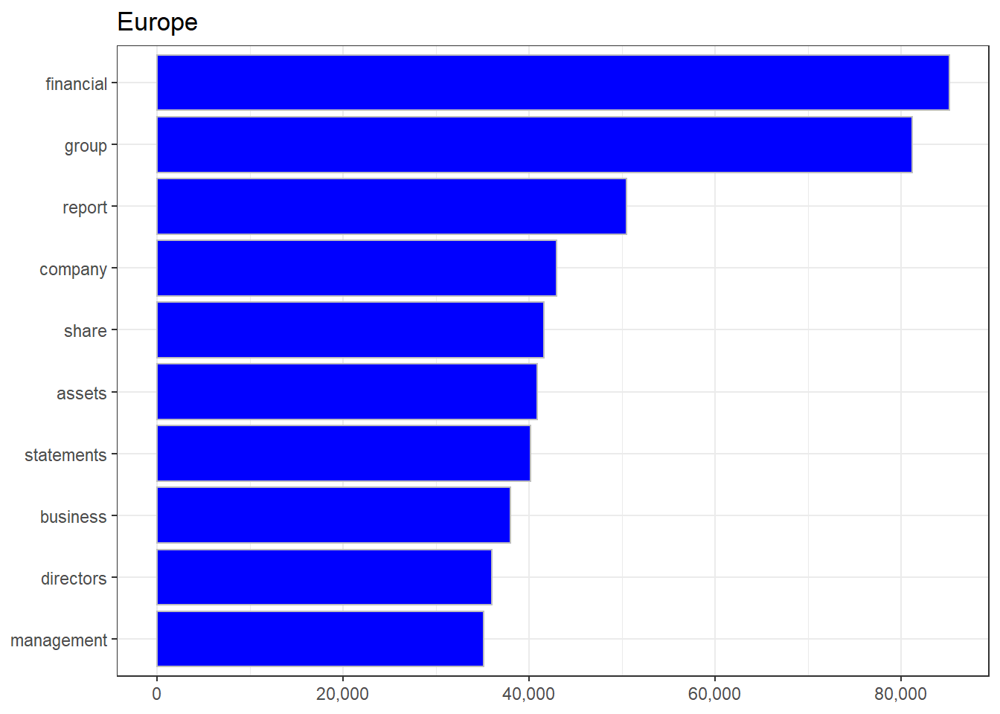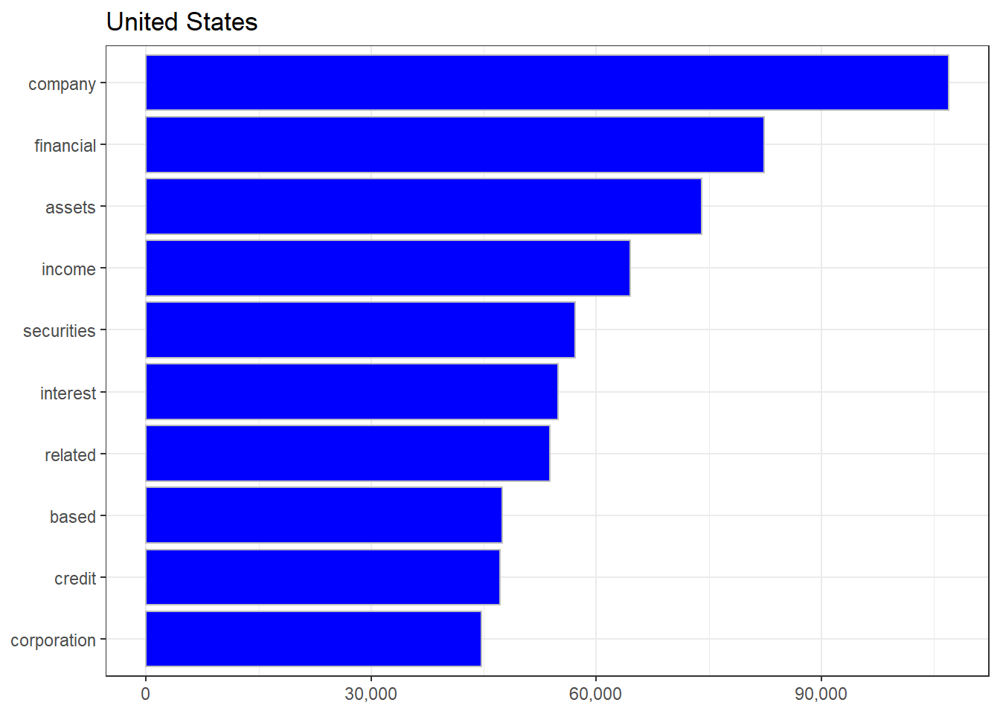
frq_2gram <- prep_top_n_by(tab_2gram, tab_data, country, 10) %>%
display_top_n_by(country)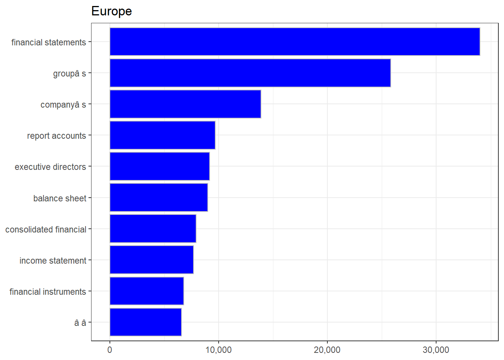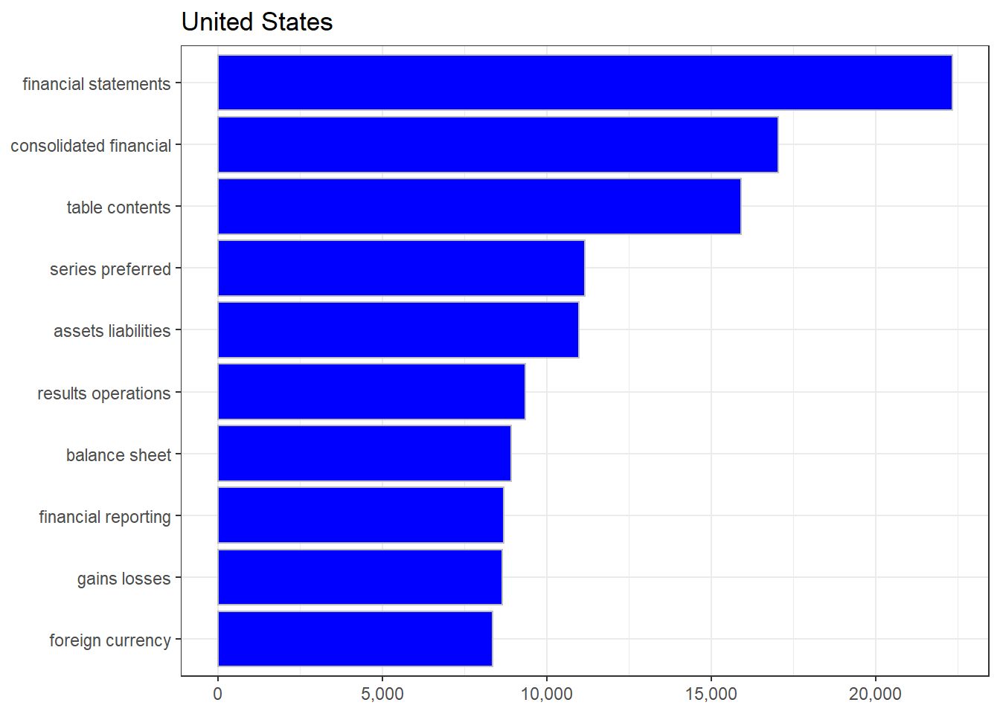
The analysis doesn’t reveal a lot of useful information, but shows that our cleaning procedure was successful.
Sentiment
Next, we have a simple comparison of European and US firms in terms of their word sentiments. We will use the custom function show_sentiment() which has the sentiment list of Loughram & McDonald (see: Tim Loughran and Bill McDonald, 2011, When is a Liability not a Liability?) already implemented.
Show function: show_sentiment() (click
on arrow to show).
show_sentiment <- function(.tab, .type = c("pos/neg", "uncertainty", "litigious", "constraining", "superfluous")) {
tab_ <- .tab %>%
left_join(get_sentiments("loughran"), by = "word") %>%
left_join(select(tab_data, doc_id, country, year), by = "doc_id") %>%
group_by(country, year, sentiment) %>%
summarise(n = sum(n), .groups = "drop_last") %>%
mutate(p = n / sum(n)) %>%
ungroup() %>%
mutate(year = as.integer(year))
if (.type == "pos/neg") {
tab_ <- tab_ %>%
filter(sentiment %in% c("positive", "negative")) %>%
mutate(p = if_else(sentiment == "negative", -p, p))
} else {
tab_ <- tab_ %>%
filter(sentiment %in% c(.type))
}
tab_ %>%
ggplot(aes(x = year, y = p, color = sentiment, fill = sentiment)) +
geom_area(stat = "identity", alpha = 0.4) +
geom_point(size = 1) +
facet_wrap(~country, nrow = 1) +
theme_bw() +
scale_x_continuous(breaks= pretty_breaks()) +
scale_y_continuous(labels = scales::percent) +
labs(x = NULL, y = NULL) +
geom_vline(xintercept = c(2009)) +
theme(legend.position = "none") +
ggtitle(toupper(.type))
}We will use the categories: Positive/Negative, Uncertainty, Litigious, Constraining, and Superfluous for our analysis.
Word Lists
get_sentiments("loughran") %>%
group_by(sentiment) %>%
mutate(id = row_number()) %>%
ungroup() %>%
pivot_wider(names_from = sentiment, values_from = word) %>%
show_table(.n = 10)| id | negative | positive | uncertainty | litigious | constraining | superfluous |
|---|---|---|---|---|---|---|
| 1 | abandon | able | abeyance | abovementioned | abide | aegis |
| 2 | abandoned | abundance | abeyances | abrogate | abiding | amorphous |
| 3 | abandoning | abundant | almost | abrogated | bound | anticipatory |
| 4 | abandonment | acclaimed | alteration | abrogates | bounded | appertaining |
| 5 | abandonments | accomplish | alterations | abrogating | commit | assimilate |
| 6 | abandons | accomplished | ambiguities | abrogation | commitment | assimilating |
| 7 | abdicated | accomplishes | ambiguity | abrogations | commitments | assimilation |
| 8 | abdicates | accomplishing | ambiguous | absolve | commits | bifurcated |
| 9 | abdicating | accomplishment | anomalies | absolved | committed | bifurcation |
| 10 | abdication | accomplishments | anomalous | absolves | committing | cessions |
Sentiment Analysis
show_sentiment(tab_1gram, "pos/neg")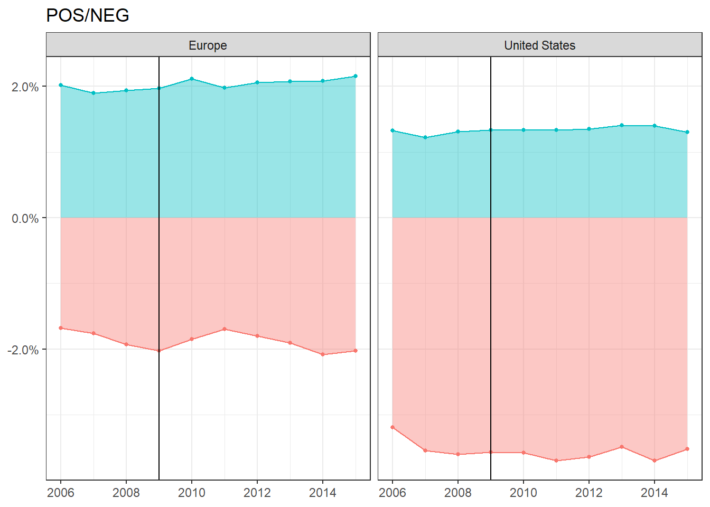
show_sentiment(tab_1gram, "uncertainty")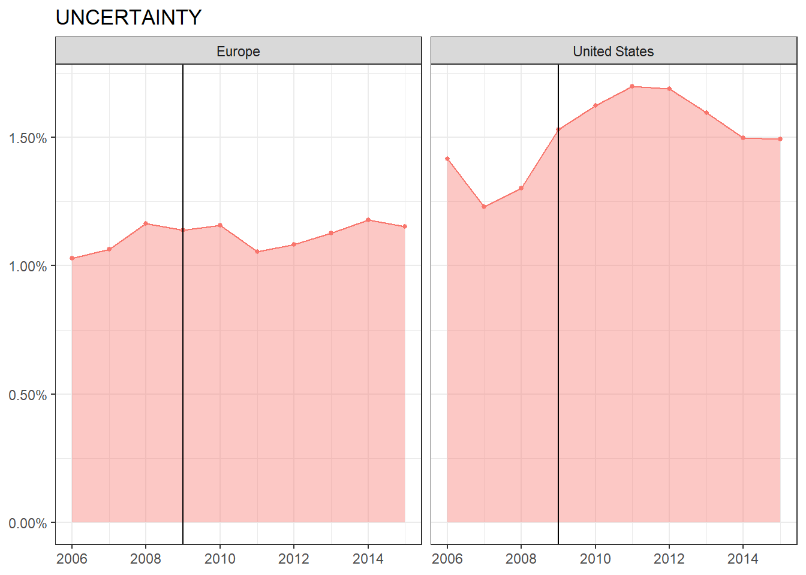
show_sentiment(tab_1gram, "litigious")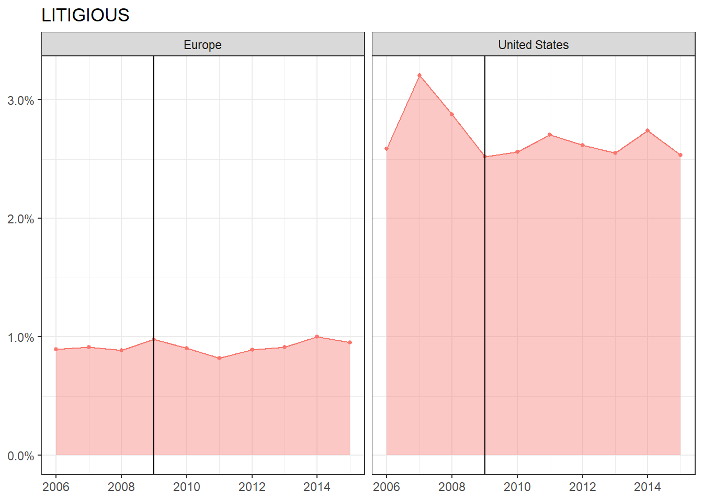
show_sentiment(tab_1gram, "constraining")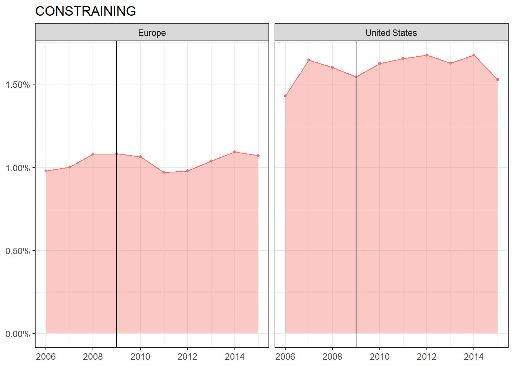
show_sentiment(tab_1gram, "superfluous")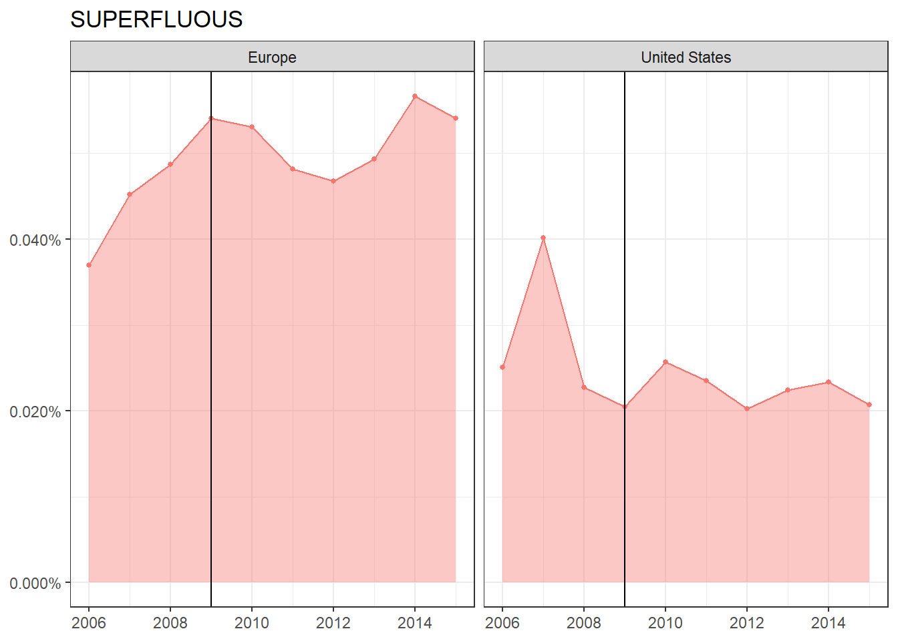
Compare Word Frequecies
In the next step we move to a more insightful analysis and compare the word frequencies for unigrams and bygrams between the two jurisdictions.
Show function: compare_word_frequqncies()
(click on arrow to show).
compare_word_frequqncies <- function(.tab, .tab_data) {
.tab %>%
left_join(select(.tab_data, doc_id, country), by = "doc_id") %>%
group_by(country, word) %>%
summarise(n = sum(n), .groups = "drop_last") %>%
mutate(p = n / sum(n, na.rm = TRUE)) %>%
ungroup() %>%
select(-n) %>%
pivot_wider(names_from = country, values_from = p) %>%
filter(!is.na(Europe) & !is.na(`United States`)) %>%
ggplot(aes(x = `United States`, y = Europe)) +
geom_abline(color = "gray40", lty = 2) +
geom_jitter(alpha = 0.1, size = 2.5, width = 0.3, height = 0.3, color = "blue") +
geom_text(aes(label = word), check_overlap = TRUE, vjust = 1.5) +
scale_x_log10(labels = percent_format()) +
scale_y_log10(labels = percent_format()) +
scale_color_gradient(limits = c(0, 0.001), low = "lightblue", high = "blue") +
theme(legend.position="none") +
theme_bw()
}if (!file.exists(lst_paths$path_com_1gram)) {
com_1gram <- compare_word_frequqncies(tab_1gram, tab_data)
write_rds(com_1gram, lst_paths$path_com_1gram, compress = "gz")
} else {
com_1gram <- read_rds(lst_paths$path_com_1gram)
}
com_1gram
if (!file.exists(lst_paths$path_com_2gram)) {
com_2gram <- compare_word_frequqncies(tab_2gram, tab_data)
write_rds(com_2gram, lst_paths$path_com_2gram, compress = "gz")
} else {
com_2gram <- read_rds(lst_paths$path_com_2gram)
}
com_2gram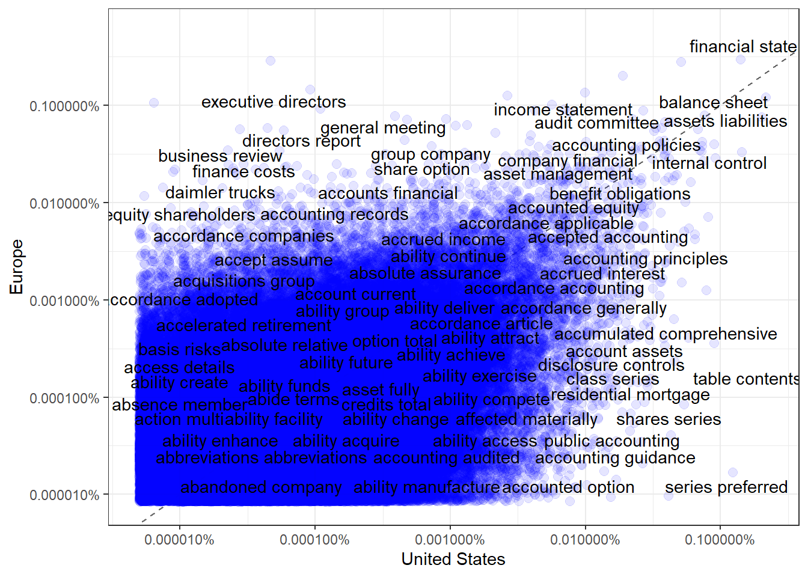
We can see that in in our setting US and European firms have relatively comparable frequencies for most words and bigrams. This is to be expected since we downloaded only high-market cap firms across all industries, hence might not have sufficient variation in underlying business models. We will try to gain some more insight in the textual differences between US and European firms by applying topic modeling algorithms
Topic Modelling
The math behind topic modeling is rather complex, so we won’t go into details here. The basic idea is that we want to find common topics among a number of documents and subsequently classify the documents under those topics. In our example we chose to model eight topics (this is a rather abitrary choice)
if (!file.exists(lst_paths$path_lda)) {
dtm <- cast_dtm(tab_1gram, doc_id, word, n)
lda <- LDA(dtm, k = 8, control = list(seed = 1234))
write_rds(lda, lst_paths$path_lda)
} else {
lda <- read_rds(lst_paths$path_lda)
}Show Topics
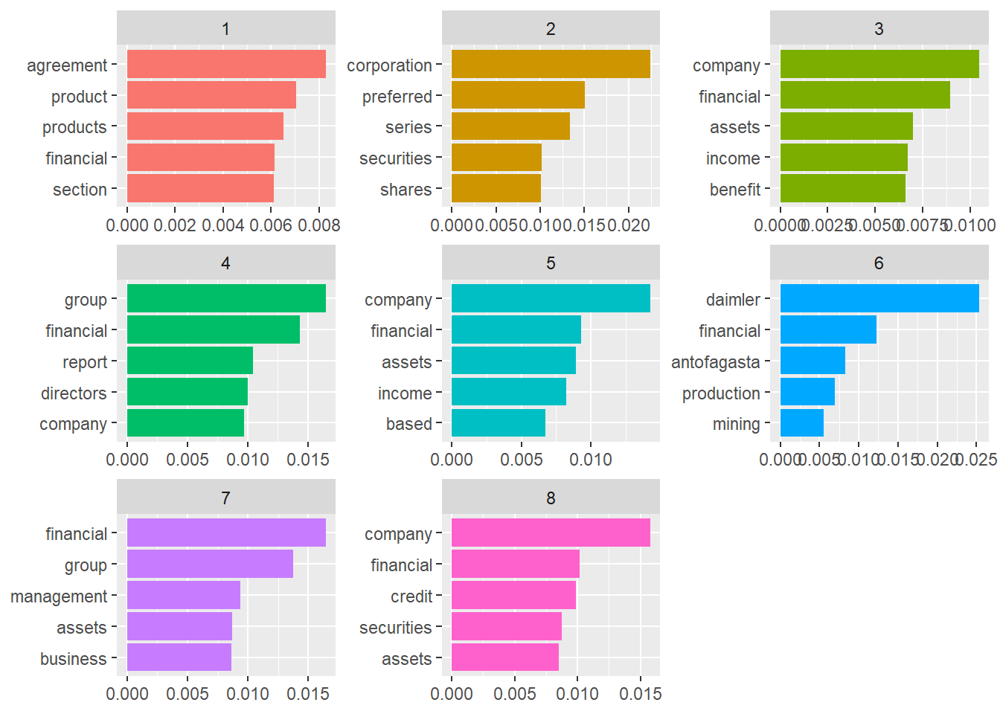
Evaluate Fit per country
Last we want to evaluate which topics are represenative for a specific collection of annual reports within a jurisdiction. For that purpose we use the gamma-matrix, which gives us the following conditional probability:
\(P(topic|token) = P(token|topic)P(topic) / P(token)\)
tab_lda_beta <- tidy(lda, matrix = "gamma")We can see that our crude approach is still not enough to find specific topics that are unique for a collection of jurisdiction-specific topics.
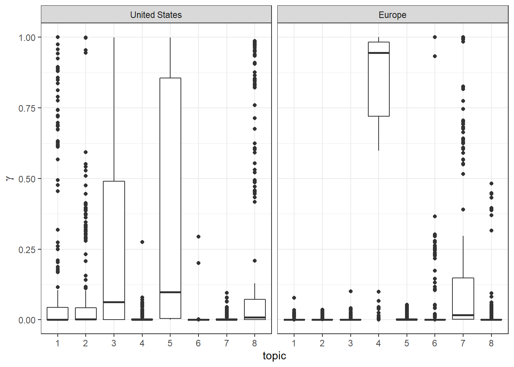
Own Function Calls
lsf.str()## compare_word_frequqncies : function (.tab, .tab_data)
## create_dirs : function (.dirs)
## display_top_n_by : function (.tab, .col)
## downlad_ar : function (.url, .dir)
## download_edgar_files : function (.tab, .dir, .retry = 5, .sleep = 1)
## download_google_drive : function (.id, .dir = NULL, .read_fun = NULL, .overwrite = FALSE)
## fnc_fix_cost : function (.cf, .v, .vm)
## fnc_fix_mult : function (.v, .vm)
## fnc_fix_unit : function (.cf, .v, .vm)
## fnc_rev : function (.p, .v)
## fnc_rev_sigmoid : function (.v)
## fnc_rev_unit : function (.p, .v)
## fnc_var_cost : function (.cv, .v, .vb, .vc, .vd, .d)
## fnc_var_disc : function (.v, .vb, .vc, .vd, .d)
## fnc_var_unit : function (.cv, .v, .vb, .vc, .vd, .d)
## get_amortization : function (.tab, .years, .invest, .discount)
## get_cm_table : function (.tab)
## get_company_table : function (.url)
## get_f500 : function ()
## get_infos : function (.path)
## get_input_table : function (.v = 0, .p = 0, .cv = 0, .cf = 0, .vb = 0, .vc = 0, .vd = 0, .d = 0,
## .vm = 0, .ca = 0)
## get_lm_stop : function ()
## get_ngrams : function (.path, .ngram, .stop = tibble(word = "", .rows = 0), .rm_num = TRUE)
## get_profit : function (.tab)
## list_files_tab : function (dirs, reg = "*", id = "doc_id", rec = FALSE, info = FALSE)
## map_company_filings : function (.tickers, .ownership = FALSE, .type = "", .before = "", .count = 100,
## .page = 1, .progress = TRUE, .sleep = 0, .retry = 5)
## map_filing_details : function (.id, .hrefs, .progress = TRUE, .sleep = 0, .retry = 5)
## own_get_fs : function (.path, .dir_cache)
## own_XBRL : function ()
## own_xbrlDoAll : function (file.inst, cache.dir = "xbrl.Cache", prefix.out = NULL, verbose = FALSE,
## delete.cached.inst = TRUE)
## pdf_read_and_tokenize : function (.path, .dir)
## plot_amortization : function (.tab, .size)
## plot_monte_carlo : function (.tab, .size)
## plot_points : function (.tab, .x, .y, .xlab = "", .ylab = "", .title = "", .size)
## plot_profits : function (.tab, .x, .y, .xlab = "", .ylab = "", .title = "", .size = 16)
## prep_top_n_by : function (.tab_word, .tab_data, .col, .n = 10)
## remove_html_tags : function (.string, rm_linebreaks = TRUE)
## safe_get_company_table : function (...)
## sec_read_and_tokenize : function (.path, .dir = NULL)
## show_sentiment : function (.tab, .type = c("pos/neg", "uncertainty", "litigious", "constraining",
## "superfluous"))
## show_table : function (.tab, .n = Inf)
## standardize_name : function (.name)
## xbrl_extract_elements : function (.zip, .dir_tmp, .dir_out)
## xbrl_extract_line_items : function (.tab, .tags)
## xbrl_process_elements : function (.inst)Session Info
sessioninfo::session_info()## - Session info ----------------------------------------------------------------
## setting value
## version R version 4.1.2 (2021-11-01)
## os Windows 10 x64 (build 22000)
## system x86_64, mingw32
## ui RStudio
## language (EN)
## collate English_Germany.1252
## ctype English_Germany.1252
## tz Europe/Berlin
## date 2022-05-30
## rstudio 2022.02.2+485 Prairie Trillium (desktop)
## pandoc 2.17.1.1 @ C:/Program Files/RStudio/bin/quarto/bin/ (via rmarkdown)
##
## - Packages --------------------------------------------------------------------
## package * version date (UTC) lib source
## assertthat 0.2.1 2019-03-21 [1] CRAN (R 4.1.0)
## backports 1.4.1 2021-12-13 [1] CRAN (R 4.1.2)
## broom 0.7.12 2022-01-28 [1] CRAN (R 4.1.2)
## bslib 0.3.1 2021-10-06 [1] CRAN (R 4.1.1)
## cellranger 1.1.0 2016-07-27 [1] CRAN (R 4.1.0)
## cli 3.2.0 2022-02-14 [1] CRAN (R 4.1.2)
## codetools 0.2-18 2020-11-04 [2] CRAN (R 4.1.2)
## colorspace 2.0-2 2021-06-24 [1] CRAN (R 4.1.1)
## crayon 1.5.0 2022-02-14 [1] CRAN (R 4.1.2)
## curl 4.3.2 2021-06-23 [1] CRAN (R 4.1.0)
## data.table 1.14.2 2021-09-27 [1] CRAN (R 4.1.1)
## DBI 1.1.2 2021-12-20 [1] CRAN (R 4.1.2)
## dbplyr 2.1.1 2021-04-06 [1] CRAN (R 4.1.0)
## digest 0.6.29 2021-12-01 [1] CRAN (R 4.1.2)
## dplyr * 1.0.8 2022-02-08 [1] CRAN (R 4.1.2)
## edgarWebR * 1.1.0 2021-04-24 [1] CRAN (R 4.1.0)
## ellipsis 0.3.2 2021-04-29 [1] CRAN (R 4.1.0)
## evaluate 0.14 2019-05-28 [1] CRAN (R 4.1.0)
## fansi 1.0.2 2022-01-14 [1] CRAN (R 4.1.2)
## farver 2.1.0 2021-02-28 [1] CRAN (R 4.1.0)
## fastmap 1.1.0 2021-01-25 [1] CRAN (R 4.1.0)
## forcats * 0.5.1 2021-01-27 [1] CRAN (R 4.1.0)
## fs 1.5.2 2021-12-08 [1] CRAN (R 4.1.2)
## fst * 0.9.8 2022-02-08 [1] CRAN (R 4.1.2)
## fstcore * 0.9.8 2022-02-04 [1] CRAN (R 4.1.2)
## furrr * 0.2.3 2021-06-25 [1] CRAN (R 4.1.0)
## future * 1.23.0 2021-10-31 [1] CRAN (R 4.1.1)
## fuzzyjoin * 0.1.6 2020-05-15 [1] CRAN (R 4.1.0)
## generics 0.1.2 2022-01-31 [1] CRAN (R 4.1.2)
## ggplot2 * 3.3.5 2021-06-25 [1] CRAN (R 4.1.0)
## ggthemes * 4.2.4 2021-01-20 [1] CRAN (R 4.1.2)
## globals 0.14.0 2020-11-22 [1] CRAN (R 4.1.0)
## glue 1.6.2 2022-02-24 [1] CRAN (R 4.1.2)
## gtable 0.3.0 2019-03-25 [1] CRAN (R 4.1.0)
## haven 2.4.3 2021-08-04 [1] CRAN (R 4.1.1)
## here * 1.0.1 2020-12-13 [1] CRAN (R 4.1.0)
## highr 0.9 2021-04-16 [1] CRAN (R 4.1.0)
## hms 1.1.1 2021-09-26 [1] CRAN (R 4.1.1)
## htmltools 0.5.2 2021-08-25 [1] CRAN (R 4.1.1)
## httr 1.4.2 2020-07-20 [1] CRAN (R 4.1.0)
## ISOcodes * 2022.01.10 2022-01-10 [1] CRAN (R 4.1.2)
## janeaustenr 0.1.5 2017-06-10 [1] CRAN (R 4.1.0)
## janitor * 2.1.0 2021-01-05 [1] CRAN (R 4.1.0)
## jquerylib 0.1.4 2021-04-26 [1] CRAN (R 4.1.0)
## jsonlite 1.7.3 2022-01-17 [1] CRAN (R 4.1.2)
## kableExtra * 1.3.4 2021-02-20 [1] CRAN (R 4.1.0)
## knitr 1.37 2021-12-16 [1] CRAN (R 4.1.2)
## koRpus * 0.13-8 2021-05-17 [1] CRAN (R 4.1.3)
## koRpus.lang.en * 0.1-4 2020-10-24 [1] CRAN (R 4.1.3)
## labeling 0.4.2 2020-10-20 [1] CRAN (R 4.1.0)
## lattice 0.20-45 2021-09-22 [2] CRAN (R 4.1.2)
## lifecycle 1.0.1 2021-09-24 [1] CRAN (R 4.1.1)
## listenv 0.8.0 2019-12-05 [1] CRAN (R 4.1.0)
## lubridate * 1.8.0 2021-10-07 [1] CRAN (R 4.1.1)
## magrittr 2.0.2 2022-01-26 [1] CRAN (R 4.1.2)
## Matrix 1.4-0 2021-12-08 [1] CRAN (R 4.1.2)
## modelr 0.1.8 2020-05-19 [1] CRAN (R 4.1.0)
## modeltools 0.2-23 2020-03-05 [1] CRAN (R 4.1.1)
## munsell 0.5.0 2018-06-12 [1] CRAN (R 4.1.0)
## NLP 0.2-1 2020-10-14 [1] CRAN (R 4.1.0)
## openxlsx * 4.2.5 2021-12-14 [1] CRAN (R 4.1.2)
## parallelly 1.30.0 2021-12-17 [1] CRAN (R 4.1.2)
## patchwork * 1.1.1 2020-12-17 [1] CRAN (R 4.1.0)
## pillar 1.7.0 2022-02-01 [1] CRAN (R 4.1.2)
## pkgconfig 2.0.3 2019-09-22 [1] CRAN (R 4.1.0)
## plyr 1.8.6 2020-03-03 [1] CRAN (R 4.1.0)
## prettyunits 1.1.1 2020-01-24 [1] CRAN (R 4.1.0)
## progress 1.2.2 2019-05-16 [1] CRAN (R 4.1.0)
## purrr * 0.3.4 2020-04-17 [1] CRAN (R 4.1.0)
## R.cache 0.15.0 2021-04-30 [1] CRAN (R 4.1.0)
## R.methodsS3 1.8.1 2020-08-26 [1] CRAN (R 4.1.0)
## R.oo 1.24.0 2020-08-26 [1] CRAN (R 4.1.0)
## R.utils 2.11.0 2021-09-26 [1] CRAN (R 4.1.1)
## R6 2.5.1 2021-08-19 [1] CRAN (R 4.1.1)
## Rcpp 1.0.8 2022-01-13 [1] CRAN (R 4.1.2)
## readr * 2.1.2 2022-01-30 [1] CRAN (R 4.1.2)
## readtext * 0.81 2021-07-14 [1] CRAN (R 4.1.0)
## readxl 1.3.1 2019-03-13 [1] CRAN (R 4.1.0)
## reprex 2.0.1 2021-08-05 [1] CRAN (R 4.1.1)
## reshape2 1.4.4 2020-04-09 [1] CRAN (R 4.1.0)
## rlang 1.0.1 2022-02-03 [1] CRAN (R 4.1.2)
## rmarkdown 2.11 2021-09-14 [1] CRAN (R 4.1.1)
## rprojroot 2.0.2 2020-11-15 [1] CRAN (R 4.1.0)
## rstudioapi 0.13 2020-11-12 [1] CRAN (R 4.1.0)
## rvest * 1.0.2 2021-10-16 [1] CRAN (R 4.1.1)
## sass 0.4.0 2021-05-12 [1] CRAN (R 4.1.0)
## scales * 1.1.1 2020-05-11 [1] CRAN (R 4.1.0)
## sessioninfo 1.2.2 2021-12-06 [1] CRAN (R 4.1.2)
## slam 0.1-50 2022-01-08 [1] CRAN (R 4.1.2)
## snakecase 0.11.0 2019-05-25 [1] CRAN (R 4.1.0)
## SnowballC 0.7.0 2020-04-01 [1] CRAN (R 4.1.0)
## stringdist * 0.9.8 2021-09-09 [1] CRAN (R 4.1.1)
## stringi * 1.7.6 2021-11-29 [1] CRAN (R 4.1.2)
## stringr * 1.4.0 2019-02-10 [1] CRAN (R 4.1.0)
## styler 1.6.2 2021-09-23 [1] CRAN (R 4.1.1)
## svglite 2.1.0 2022-02-03 [1] CRAN (R 4.1.2)
## sylly * 0.1-6 2020-09-20 [1] CRAN (R 4.1.3)
## sylly.en 0.1-3 2018-03-19 [1] CRAN (R 4.1.3)
## systemfonts 1.0.4 2022-02-11 [1] CRAN (R 4.1.2)
## textstem * 0.1.4 2018-04-09 [1] CRAN (R 4.1.3)
## tibble * 3.1.6 2021-11-07 [1] CRAN (R 4.1.2)
## tidyr * 1.2.0 2022-02-01 [1] CRAN (R 4.1.2)
## tidyselect 1.1.1 2021-04-30 [1] CRAN (R 4.1.0)
## tidytext * 0.3.2 2021-09-30 [1] CRAN (R 4.1.1)
## tidyverse * 1.3.1 2021-04-15 [1] CRAN (R 4.1.0)
## tm 0.7-8 2020-11-18 [1] CRAN (R 4.1.0)
## tokenizers 0.2.1 2018-03-29 [1] CRAN (R 4.1.0)
## topicmodels * 0.2-12 2021-01-29 [1] CRAN (R 4.1.3)
## tzdb 0.2.0 2021-10-27 [1] CRAN (R 4.1.1)
## utf8 1.2.2 2021-07-24 [1] CRAN (R 4.1.1)
## vctrs 0.3.8 2021-04-29 [1] CRAN (R 4.1.0)
## viridisLite 0.4.0 2021-04-13 [1] CRAN (R 4.1.0)
## webshot 0.5.2 2019-11-22 [1] CRAN (R 4.1.0)
## withr 2.4.3 2021-11-30 [1] CRAN (R 4.1.2)
## XBRL 0.99.19 2021-10-18 [1] CRAN (R 4.1.1)
## xfun 0.29 2021-12-14 [1] CRAN (R 4.1.2)
## xml2 * 1.3.3 2021-11-30 [1] CRAN (R 4.1.2)
## yaml 2.2.2 2022-01-25 [1] CRAN (R 4.1.2)
## zip * 2.2.0 2021-05-31 [1] CRAN (R 4.1.0)
##
## [1] E:/R/R_library
## [2] C:/Program Files/R/R-4.1.2/library
##
## -------------------------------------------------------------------------------